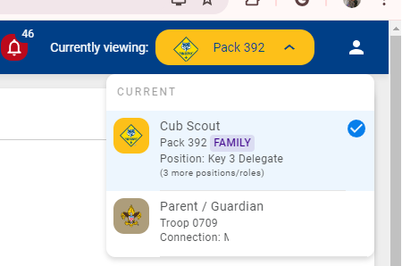
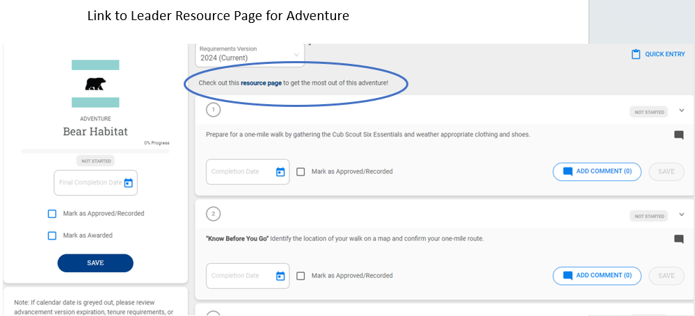
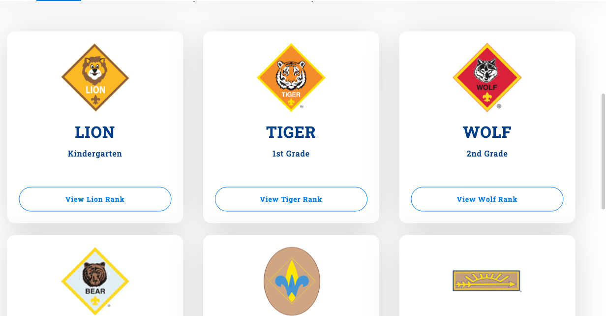
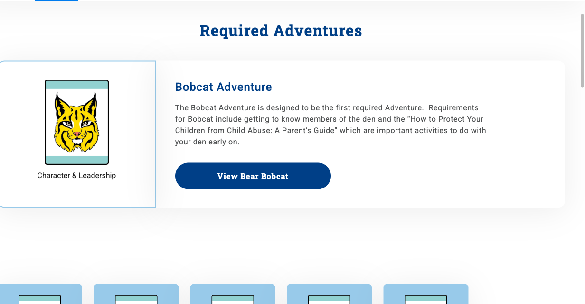
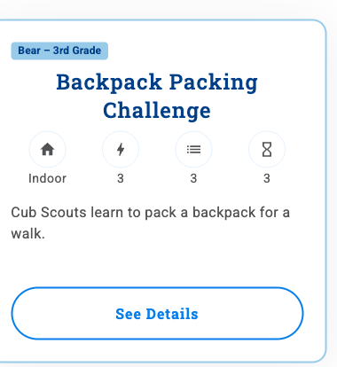
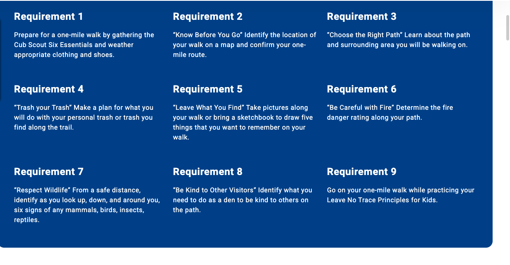
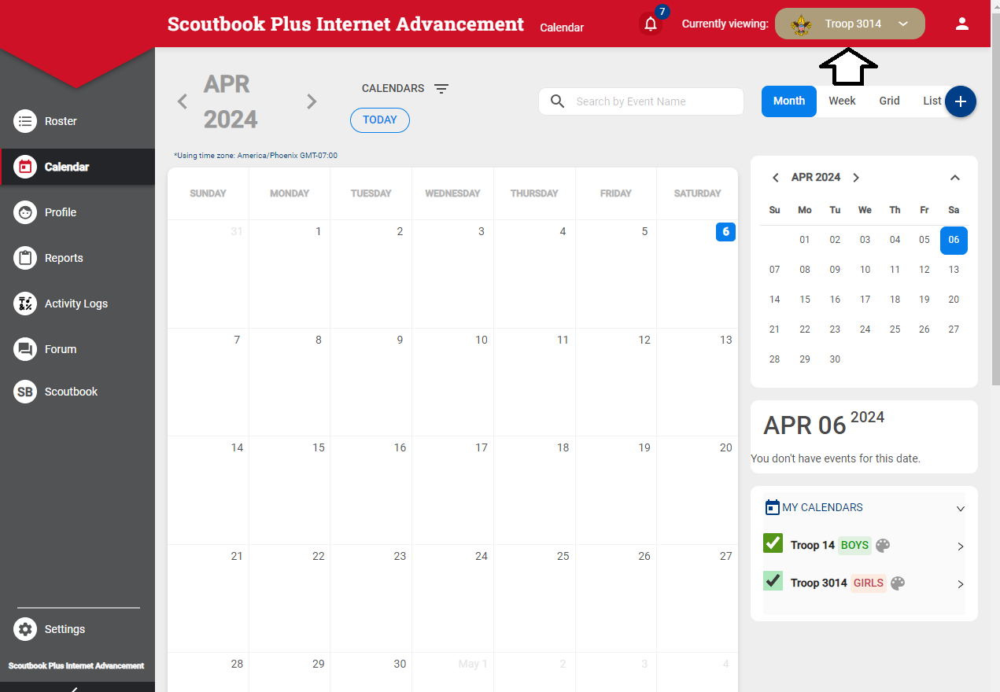
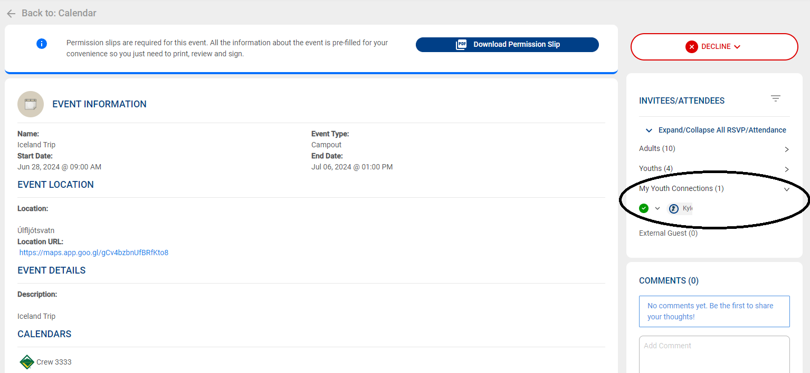

A Parent’s Guide to Following Your Scout’s Adventure
Presented by Tyler Malone Assistant Cubmaster, Pack 3116
What You Can Do as a Parent
01
Follow Progress
See your Scout’s rank, adventures, and requirements in
real time.
02
Mark Completed
Record family and at-home requirements so your den leader can
sign them off.
03
Explore Adventures
Look up every required and elective adventure, with requirements
and activity ideas.
04
Stay on Schedule
See the den and pack calendar, sync it to your phone, and RSVP
if your den uses it.
What you can’t doParents can mark
items Completed, but only a registered unit leader
can mark them Approved (signed off). That’s
by design.
Getting In
Logging in and finding your Scout
Logging In
advancements.scouting.org
Sign in with your
my.Scouting account — the one you
used to register your Scout.
If you have more than one role, use the
Currently viewing pulldown (top right)
to pick Parent / Guardian.
Click your child’s name to open their
Scoutbook page.

Parent / Guardian appears as one of your connections
Don’t see your Scout?Parents should
already be connected to their Scouts. If yours is missing, contact
your local council registrar (your den leader can
help you reach them).
Your Scout’s Page
Every rank with a progress bar.
Current adventures and their status.
Edit Profile: check contact info, add a
nickname or photo.
Please don’tchange your
Scout’s name or
Member ID. They must match the official
application.
The arrow marks View More on the current rank
Following Progress
What the statuses mean and where to look
Who Does What
Started
Work is in progress.
You, your Scout, or a leader
›
Completed
Someone thinks the Scout is done.
Not a sign-off yet.
You, your Scout, or a leader
›
Approved
A leader verified it. Officially earned.
Unit leaders only
›
Awarded
Optional. The badge or loop was presented to your Scout.
Unit leaders
Completed is like your Scout raising their hand:
“I did it!” Approved is the
leader’s initials in the handbook.
You can enter Completed items on the website or in the
Scouting mobile app.
Inside a Rank
Click View More on a rank: required adventures on top, electives
below
Each adventure shows whether it’s
not started, started, or
completed.
For example, the Bear rank takes
six required adventures plus
any two electives.
Marking Completed
Recording what your Scout did at home
Before You Mark Anything
Before marking anything as complete, discuss with your unit leaders
to make sure you are aligned with your unit’s advancement
practices.
Scoutbook Plus Tutorial for Parents
Your den leader records
Requirements done at den meetings and pack
events.
The Approval for everything.
You record
Family requirements.
Anything assigned as homework.
Make-ups and electives you agreed on with your den leader.
Marking a Requirement Completed
On your Scout’s page, click
View More on the rank.
Click the adventure.
Find the requirement and enter the
completion date. Add a comment if helpful.
Click Save.

Leader view shown: the Approved checkbox is leaders only
Several at Once: Quick Entry
On the adventure page, click
Quick Entry (top right).
Check each finished requirement in the
Complete column.
Enter the date and click
Save.
Leave Approve aloneThe
Approve column is for leaders. Marking
Completed sends it to your den leader’s
Pending Items list to sign off.
Exploring Adventures
Every rank, adventure, and requirement on scouting.org
Find Your Scout’s Rank
scouting.org/programs/cub-scouts/adventures

Pick a rank: Lion through Arrow of Light

Each rank lists required, elective, and special elective
adventures
Inside an Adventure Page
Snapshot: what the adventure is about.
Safety Moment: what to check before you
start.
Requirements: the full list, numbered.
Activities: choose
one activity for each requirement;
See Details gives step-by-step
instructions.


Bear Habitat: all nine requirements at a glance
TipIn Scoutbook, the
resource page link at the top of an adventure takes
you straight to its page.
Staying on Schedule
The den calendar, RSVPs, and your phone
The Den & Pack Calendar
Pick your unit in the
Currently viewing pulldown (top
right).
Click Calendar in the left menu.
Choose which calendars to show: pack and den.
Put it on your phone
Click the link next to the calendar name at the
bottom of the calendar page for its iCal URL. Add it to Google,
Apple, or Outlook and new events show up automatically.

Unit selector up top · My Calendars at the right
RSVP for Your Scout
RSVP is optional. Your pack or den decides whether
to use it, and leaders turn it on event by event.
If an event has RSVP turned on:
Make sure you’re set as parent in the
top-right pulldown.
Click the event on the calendar.
On the right, expand
My Youth Connections with the chevron.
Select your Scout and set the RSVP.

My Youth Connections, circled at right
Why it mattersIf your den uses RSVP and
you don’t answer, you show up as Maybe. Your
RSVP tells the den leader how many supplies to bring.
Your Scout’s Own Account & the App
A login for your Scout
Scouts with their own my.Scouting account can
review their advancement and see the unit calendar.
Get your Scout’s Member ID from your
den leader, then create the account at
my.Scouting.org.
Never share your login with your Scout. Every
user needs their own account.
The Scouting app
Parents and Scouts can use the
Scouting mobile app for advancement and the
unit calendar instead of the website.
You can mark items Completed from the app
too.
Parent Cheat Sheet
Do
Ask your den leader how the pack handles home advancement.
Mark family and homework requirements
Completed, with a date.
Add a comment saying what your Scout did.
Browse adventures on scouting.org to preview
what’s coming.
Subscribe to the den calendar, and RSVP if
your den uses it.
Don’t
Change your Scout’s name or
Member ID.
Expect Completed to mean earned. It still needs
leader approval.
Plan special electives (archery, BB guns,
slingshots) at home. Those need approved events.
Questions? Start with your den leader. The
Scouting Forums
cover technical issues.
Screenshots courtesy of the Scoutbook Knowledge Base and
scouting.org, Scouting America. Scoutbook Plus changes often;
screens may differ from what you see today.
 The arrow marks View More on the current rank
The arrow marks View More on the current rank